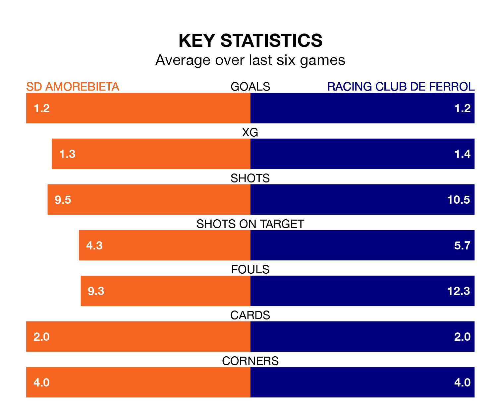

Racing Club de Ferrol travel to SD Amorebieta on late Friday in the Segunda División.
The visitors come into the game on the back of a win in their last match, having beaten Elche CF 1-0 at home, with a goal from Nicolás Serrano Galdeano.
Amorebieta, meanwhile, drew their last match, 1-1 against AD Alcorcón, with their goal scored by Eneko Jauregi Escobar.
Amorebieta are 21st in the table after 33 games, of which they have won seven and drawn 10, earning 31 points.
Racing are 13 places ahead of the home team in eighth, with 13 wins and 12 draws putting them on 51 points.
With 27 goals in 33 games so far this season, Amorebieta are the league's third-lowest scorers with 0.8 goals per game. And they are conceding more than average, letting in 40 goals at a rate of 1.2 per game.
Ferrol, meanwhile, are above average scorers, with 1.2 goals per game, compared to a league average of 1.1. They have conceded 1.1 goals per game.
With Ander Cantero Armendáriz between the sticks, the visitors can rely on one of the league's safest pair of hands. He has kept 10 clean sheets in his 33 appearances this season in the Segunda División.
In Amorebieta's net, Pablo Cuñat Campos has seven clean sheets in 26 games. He has conceded a goal every 87 minutes, 10% more often than the 93 minutes between goals for Cantero Armendariz.
In the last three years, Amorebieta and Racing have played each other on three occasions. Amorebieta won one of them and Racing the other.
Their last meeting was on October 5, when Racing won 1-0 at home.
The hosts are in reasonable form in the Segunda División, with three wins and two draws from their last six games.
With two wins and two draws over that period, Racing's form is worse – they have taken eight points from 18, compared to Amorebieta's 11.
Updated: 16:41 (UTC), 04/04/24